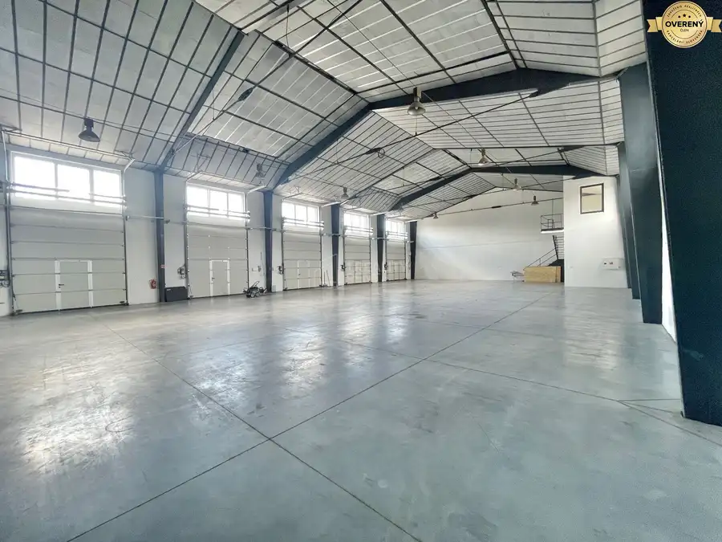

Prenájom skladového objektu 1058 m²– Žilina, Areál Závodie
Žilina
- Plocha1058 m²
- Poschodie0.
- Stavúplne prerobený
- Vlastníctvofiremné
O nehnuteľnosti
Ponúkame na prenájom skladový objekt v areáli Závodie v Žiline s celkovou výmerou 1 058 m². Objekt disponuje priestrannou skladovou halou s nákladnou rampou, vyvýšenou kanceláriou s výhľadom priamo do haly a samostatným sociálnym zázemím. Priestory sú ideálne pre logistiku, veľkoobchod alebo e-shop prevádzku – s možnosťou využitia ako celku alebo rozdelenia podľa potreby.
Popis objektu
Skladová hala s celkovou plochou 1 010,72 m²
Nákladná rampa pre bezproblémovú logistiku
Vyvýšená kancelária s výhľadom do haly (47,28 m²)
Sociálne zázemie – oddelené pánske a dámske WC
Flexibilná dispozícia s možnosťou rozdelenia priestoru
Vybavenie
Plynové vykurovanie
Samostatné meranie energií
Nákladná rampa pre vjazd nákladnej dopravy
Parkovanie
Bezproblémové parkovanie priamo v areáli v blízkosti objektu
Vhodné pre zamestnancov aj klientov
Poloha
Žilina – Areál Závodie
Strategická poloha s výborným napojením na hlavné dopravné ťahy a diaľničný privádzač
Bezproblémový vjazd pre nákladnú dopravu
Rýchla dostupnosť centra mesta
Zmluvné podmienky
Fakturácia mesačne vopred, splatnosť 14 dní
Depozit: 3-mesačné nájomné vrátane DPH
Indexácia: ročne podľa inflácie (min. 2 %)
Dostupnosť: od 1.7.2026
Dispozícia
Kancelárie a sociálne zázemie: 47,28 m² (5,60€ / m²) – 264,76€ / mesiac
Skladové priestory: 1 010,72 m² (4,90€ / m²) – 4 952,52€ / mesiac
Prevádzkové náklady: 1 058 m² (0,91€ / m²) – 962,78€ / mesiac
Spolu mesačne: 6 180,00€
Energie: podľa spotreby
Všetky ceny sú uvedené bez Dph
Dohodnite si obhliadky priestorov
1.Reality Rent
Dávid Chrenák
Parametre
| Celková rozloha | 1058 m² |
|---|---|
| Úžitková plocha | 1058 m² |
| Poschodie | prízemie |
| Vlastníctvo | firemné |
| Stav | úplne prerobený |
| Kúpeľňa | áno |
| Garáž | nie |
| Parkovanie | áno |
| Postavené z | iné |
| Energetický certifikát | nie |
| Prístupová cesta | asfaltová cesta |
| Dátum zverejnenia | 21. 5. 2026 |
Kde to je
Mohlo by Vás zaujímať
 Domy a budovy10
599 000 €Na predaj polyfunkčná/investičná budova v centre Žiliny
Žilina
9-izbový165 m²
Polyfunkčná budova s garantovaným výnosom v pešej zóne PRÉMIOVÁ NEHNUTEĽNOSŤ NA PRESTÍŽNEJ ADRESE MESTA Hľadáte investíciu, ktorá pre vás bude…
Domy a budovy10
599 000 €Na predaj polyfunkčná/investičná budova v centre Žiliny
Žilina
9-izbový165 m²
Polyfunkčná budova s garantovaným výnosom v pešej zóne PRÉMIOVÁ NEHNUTEĽNOSŤ NA PRESTÍŽNEJ ADRESE MESTA Hľadáte investíciu, ktorá pre vás bude…
 Nebytové priestory10
3 693 €Prenájom skladového objektu s kanceláriami 606m2 Žilina, Areál Slovena
Žilina
606.46 m²
Ponúkame na prenájom prevádzkový objekt v areáli Slovena v Žiline s celkovou výmerou 606,46 m². Objekt kombinuje priestrannú skladovú halu so svetlou…
Nebytové priestory10
3 693 €Prenájom skladového objektu s kanceláriami 606m2 Žilina, Areál Slovena
Žilina
606.46 m²
Ponúkame na prenájom prevádzkový objekt v areáli Slovena v Žiline s celkovou výmerou 606,46 m². Objekt kombinuje priestrannú skladovú halu so svetlou…

Nebytové priestory6 4 500 €Prenájom haly 800m2 Kysucké Nové Mesto Kysucké Nové Mesto 800 m² Na prenájom ponúkame priemyselné a komerčné priestory v Kysuckom Novom Meste, na ulici Cesta do Rudiny – ideálne riešenie pre firmy hľadajúce…